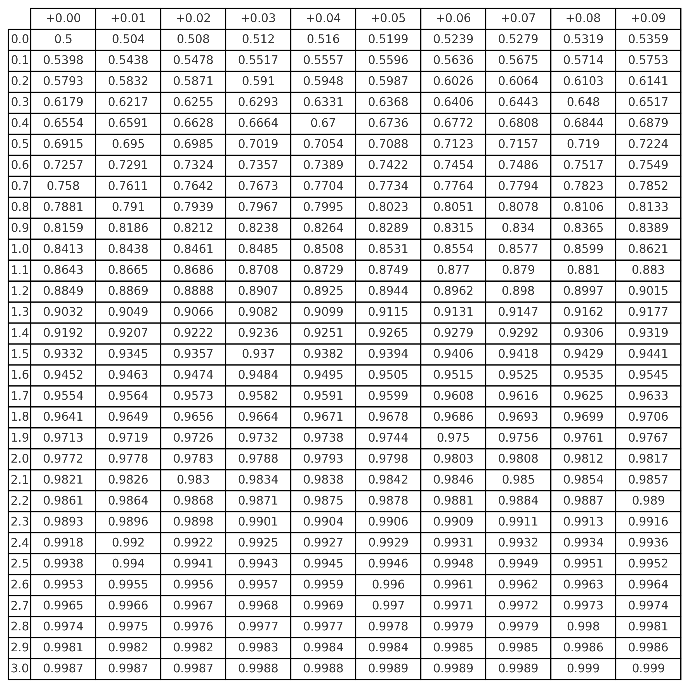

🎓 📊 Curso de Estatística: A Distribuição Normal (Parte 2): Escore-z e Tabela Z
← Voltar para o Sumário do Curso de Distribuição Normal 🎓 📊
← Voltar para os Cursos de Estatística 🎓 📊
← Voltar para a Seção de Estatística 📊

1 🎓 📊 A Distribuição Normal – Parte 2
Este curso tem como propósito apresentar, de forma acessível e aplicada, os fundamentos da distribuição normal, também conhecida como distribuição de Gauss, com apoio de visualizações gráficas e ferramentas computacionais.
- Comparação de desempenhos
- Interpretação gráfica e computacional de probabilidades
- Fundamentação para estudos futuros em inferência estatística
1.1 🧠 📖 Exercícios Resolvidos e Análise de Resultados
Situação: Suponha que os escores de QI sigam uma distribuição normal com:
\(\mu=100\)
\(\sigma=16\)
Pergunta: Qual a probabilidade de uma pessoa ter QI superior a 136?
Instruções:
Calcule o escore- \(z\) correspondente ao valor \(x=136\)
Use a Tabela Z ou software para determinar \(P(Z>z)\)
Interprete o resultado: essa pontuação é comum ou rara?
💡Dica: lembre-se que \(\boxed{P(Z>z)=1-P(Z<z)}\) e que \(\boxed{z=\frac{x-\mu}{\sigma}}\)
Distribuição: \(\mu=100, \sigma=16\)
🧮 Passo 1 - Calcular o escore- \(z\) :
\[ z=\frac{136-100}{16}=\frac{36}{16}=2,25 \]
🧮 Passo 2 - Consultar a Tabela Z:
\[ P(Z<2,25) \approx 0,9878 \Rightarrow P(Z>2,25)=1-0,9878=0,0122 \]
📌 Conclusão:
Apenas cerca de \(\mathbf{1 , 2 2 \%}\) da população tem QI superior a 136 .
1.2 📏 Comparando Desempenhos com Escore-z
Situação:
Aluno A obteve nota 80 em uma prova com \(\mu=70, \sigma=5\).
Aluno B obteve nota 8 em uma prova com \(\mu=6, \sigma=1\).
Quem teve o melhor desempenho relativo?
Cálculo dos escores- \(z\) :
\[ z_A=\frac{80-70}{5}=2,0 \quad z_B=\frac{8-6}{1}=2,0 \]
📌 Conclusão:
Ambos os alunos tiveram desempenho 2 desvios padrão acima da média de suas turmas. Ou seja, o desempenho relativo foi equivalente.
Situação:
Aluno A obteve nota 65 em uma prova com \(\mu=60, \sigma=4\).
Aluno B obteve nota 7 em uma prova com \(\mu=5,5, \sigma=1\).
Quem teve o melhor desempenho relativo?
Tarefa:
Calcule o escore- \(z\) para os dois alunos.
Compare os valores.
Interprete: qual deles se destacou mais em relação à média da sua turma?
💡 Dica: lembre-se que quanto maior o \(z\), melhor o desempenho relativo.
Aluno A:
\[ z_A=\frac{65-60}{4}=\frac{5}{4}=1,25 \]
Aluno B:
\[ z_B=\frac{7-5,5}{1}=\frac{1,5}{1}=1,5 \]
📌 Conclusão:
O Aluno B teve um escore-z maior que o Aluno A.
Portanto, o Aluno B apresentou melhor desempenho relativo em relação à sua turma.
- Distribuição Normal:
\[ \boxed{f(x)=\frac{1}{\sqrt{2 \pi \sigma^2}} e^{-\frac{(x-\mu)^2}{2 \sigma^2}}} \]
- Distribuição Normal Padrão: \(\mu=0, \sigma=1\)
\[ \boxed{f(z)=\frac{1}{\sqrt{2 \pi}} e^{-z^2 / 2}} \]
- Escore-z: transforma \(x\) em um valor padronizado
\[ \boxed{z=\frac{x-\mu}{\sigma}} \]
- Valor original a partir de \(z\) :
\[ \boxed{x=\mu+z \sigma} \]
Regra Empírica:
\(68 \%\) : entre \(\mu \pm 1 \sigma\)
\(95 \%\) : entre \(\mu \pm 2 \sigma\)
\(99,7 \%\) : entre \(\mu \pm 3 \sigma\)
1.3 📊 Tabela Z - Distribuição Normal Padrão
Como usar a Tabela Z:
O valor da linha indica a parte inteira e a primeira casa decimal do escore-\(z\).
A coluna indica a segunda casa decimal.
A interseção fornece \(P(Z<z)\), ou seja, a probabilidade acumulada até o valor de \(z\).
| z | 0.00 | 0.01 | 0.02 | 0.03 | 0.04 | 0.05 |
|---|---|---|---|---|---|---|
| 1.2 | 0.8849 | 0.8869 | 0.8888 | 0.8907 | 0.8925 | 0.8944 |
🧠 Exemplo:
Para \(z=1,25\), usamos a linha 1.2 e a coluna \(0.05 \rightarrow P(Z<1,25)=0,8944\)
1.4 📊 Tabela Z Acumulada – Normal Padrão [\(P(Z<z)\)]

Fonte: Gerada com scipy.stats.norm.cdf para valores de z entre 0,00 e 3,09.
Objetivo: Aplicar os conceitos de distribuição normal e escore-\(z\) em ambiente computacional.
No Excel:
Use =NORM.DIST(120; 100; 16; VERDADEIRO) para calcular \(P(X<120)\).
Use =NORM. INV (0,90; 100; 16) para obter o valor correspondente ao percentil 90.
Gere uma tabela com valores de \(x\), calcule seus escore-\(z\) e destaque quem está acima da média.
No R :
\(\operatorname{pnorm}(120\), mean \(=100, \mathrm{sd}=16)\) retorna \(P(X<120)\).
\(\operatorname{qnorm}(0.90\), mean \(=100, \mathrm{sd}=16)\) retorna o valor para o percentil 90.
z <- (x - mean) / sd para calcular escore-\(z\) de vetores.
💡 Sugestão: comparar alunos de diferentes turmas com diferentes médias e desvios, usando escore-\(z\).
Situação:
- O tempo de atendimento (em minutos) em um serviço segue uma distribuição normal com:
\[ \mu=50, \quad \sigma=10 \]
- O gráfico abaixo mostra a distribuição dos tempos de atendimento.
Tarefa:
- Marque no gráfico as regiões correspondentes a:
\(P(40<X<60)\)
\(P(X>70)\)
Calcule os escores-\(z\) correspondentes aos valores 40, 60 e 70.
Use Excel ou R para calcular as probabilidades dessas regiões.
Interprete: são tempos de atendimento comuns ou raros?
Dica: use a Regra Empírica e a simetria da curva como apoio visual.
Gráfico para o Desafio: Interprete as Áreas

A curva mostra a distribuição de \(X \sim N(50, 10^2)\).
As áreas coloridas representam:
Azul: \(P(40 < X < 60)\), Vermelho: \(P(X > 70)\).
Distribuição: Tempo de atendimento \(X \sim N\left(50,10^2\right)\)
- Escore-\(z\):
\[ z_{40}=\frac{40-50}{10}=-1 \quad z_{60}=\frac{60-50}{10}=1 \quad z_{70}=\frac{70-50}{10}=2 \]
- Probabilidades:
\(P(40<X<60)=P(-1<Z<1) \approx 0,6826\)
\(P(X>70)=P(Z>2)=1-P(Z<2) \approx 1-0,9772=0,0228\)
📌 Interpretação:
Aproximadamente \(\mathbf{6 8 , 2 6 \%}\) dos atendimentos duram entre 40 e 60 minutos. Apenas \(\mathbf{2 , 2 8 \%}\) dos atendimentos duram mais de 70 minutos - são considerados raros.
Distribuição: Tempo de atendimento \(X \sim N\left(50,10^2\right)\)
No Excel:
\(P(40<X<60)\) : =NORM.DIST(60; 50; 10; VERDADEIRO) NORM.DIST(40; 50; 10; VERDADEIRO) Resultado: \(\approx 0,6826\)
\(P(X>70):=1\) - NORM.DIST(70; 50; 10; VERDADEIRO) Resultado: \(\approx 0,0228\)
No R:
\(P(40<X<60):\) pnorm(60, mean=50, sd=10) - pnorm(40, mean=50, \(\mathrm{sd}=10\) )
\(P(X>70): 1-\operatorname{pnorm}(70\), mean \(=50, \mathrm{sd}=10)\)
Resultados aproximados: \(P(40<X<60) \approx 68,26 \%, P(X>70) \approx 2,28 \%\).
1.5 Importância da Distribuição Normal na Estatística
A distribuição normal é mais do que uma curva bonita: ela é fundamental na estatística aplicada.
Muitos métodos inferenciais dependem da normalidade:
Testes de hipóteses (teste \(z\), teste \(t\))
Construção de intervalos de confiança
Análises de regressão linear
Aproximações para distribuições amostrais
Conhecer a distribuição normal é o primeiro passo para entender a inferência estatística!
1.6 📌 Conclusão da Parte 2: Escore-z e Tabela Z
A Parte 2 do curso aprofundou o uso prático da distribuiçāo normal e do escore-\(z\):
Comparação de desempenhos
Interpretação gráfica e computacional de probabilidades
Fundamentação para estudos futuros em inferência estatística
2 📚 Referências
- Schmuller, Joseph. Statistical Analysis with Excel® For Dummies®, \(5^{\underline{a}}\) Edição. John Wiley & Sons, 2016.
- Schmuller, Joseph. Análise Estatística com R Para Leigos, \(2^{\underline{a}}\) Edição. Alta Books, 2021.
- Levine, David M.; Stephan, David; Szabat, Kathryn A. Statistics for Managers Using Microsoft Excel, \(8^{\underline{a}}\) Edição. Pearson, 2017.
- Morettin, Luiz Gonzaga. Estatística Básica: Probabilidade e Inferência, \(7^{\underline{\mathrm{a}}}\) Edição. Pearson, 2017.
- Morettin, Pedro Alberto; Bussab, Wilton de Oliveira. Estatística Básica, \(10^{\underline{a}}\) Edição. São Paulo: SaraivaUni, 2023.
3 🔗 Acesso Rápido às Partes do Curso
🎯 Parte 1: Introdução à Distribuição Normal
🎯 Parte 2: Escore-z e Tabela Z(👉 Você está aqui!)
🎯 Parte 3: Gráficos, TCL e Normalidade Aproximada
← Voltar para o Sumário do Curso de Distribuição Normal 🎓 📊
← Voltar para os Cursos de Estatística 🎓 📊
← Voltar para a Seção de Estatística 📊
Blog do Marcellini — Explorando a Estatística com Rigor e Beleza.
Criado por Blog do Marcellini com ❤️ e código.